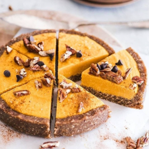

Ingredients
Crust:
- 1 cup pecans
- 1/2 cup oats (gluten free if needed)
- 8 medjool dates (fresh and juicy or soaked in hot water and drained)
- pinch of sea salt
Filling:
- 1/2 cup cashews (soaked overnight or 30 minutes in hot water, drained)
- 1/2 cup pureed roasted pumpkin
- 3 tbsp maple syrup
- 1 tbsp lemon juice
- 1/4 cup full fat coconut milk
- 1 tbsp coconut oil, melted
- 1 tsp cinnamon
Instructions
- Add oats and pecans to a food processor and blitz until broken to small pieces.
- Add dates (I soaked mine cause they weren't very juicy) and salt and blend until wet, crumbly dough
is formed. You can add a tbsp of water if too dry.
- Press the dough into a tart pan and place in the freezer while preparing the filling.
- Add all the ingredients, besides coconut oil, to a food processor and blend on high speed until
creamy.
- Taste and adjust maple syrup or lemon juice if necessary.
- Add melted coconut oil and blend for one more minute.
- Pour into chilled pie crust.
- Place in the freezer for a couple of hours before cutting.
Source Here